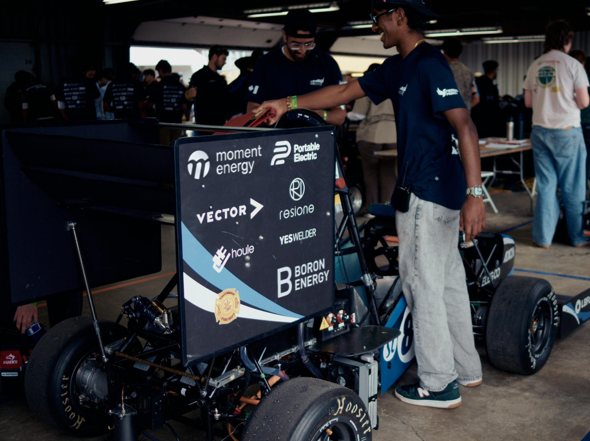
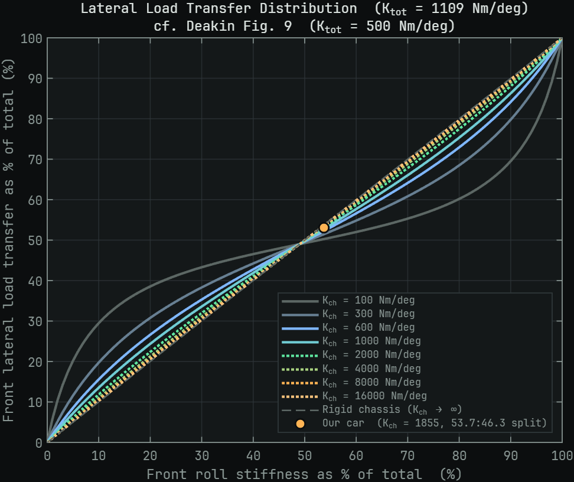
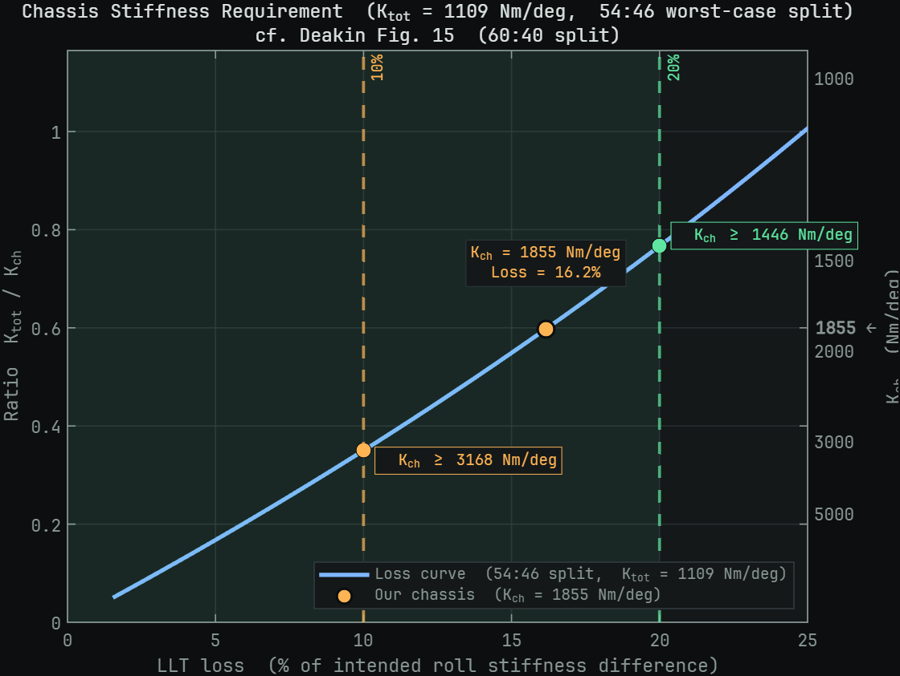
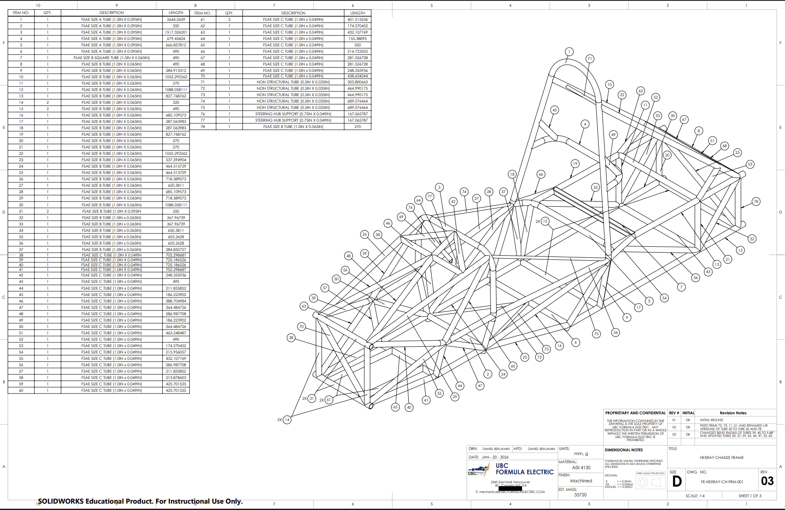
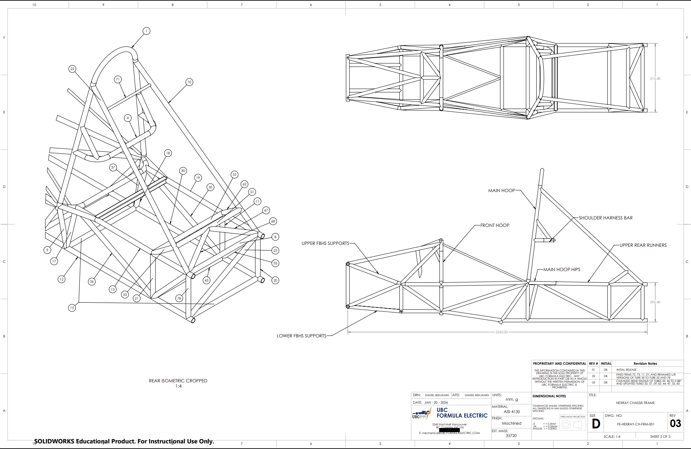
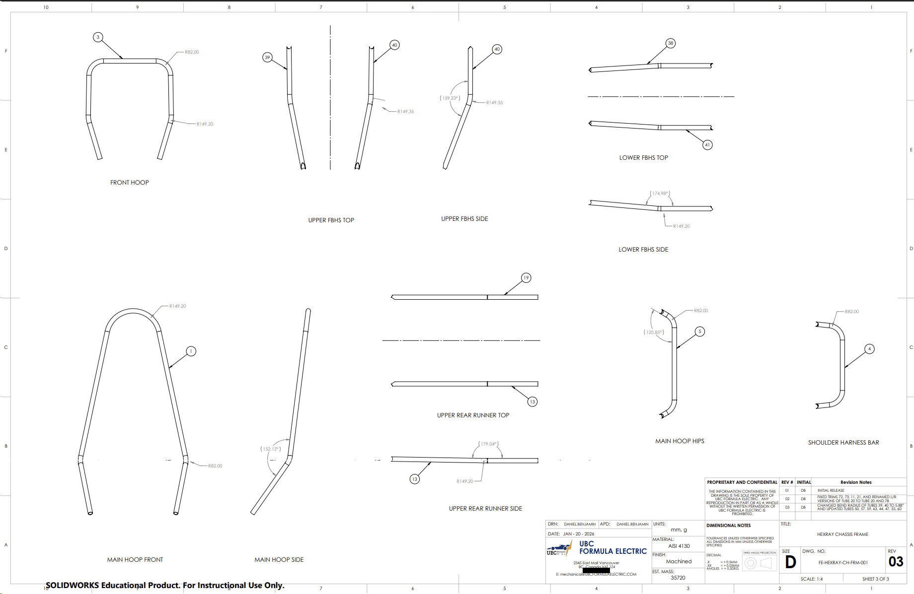
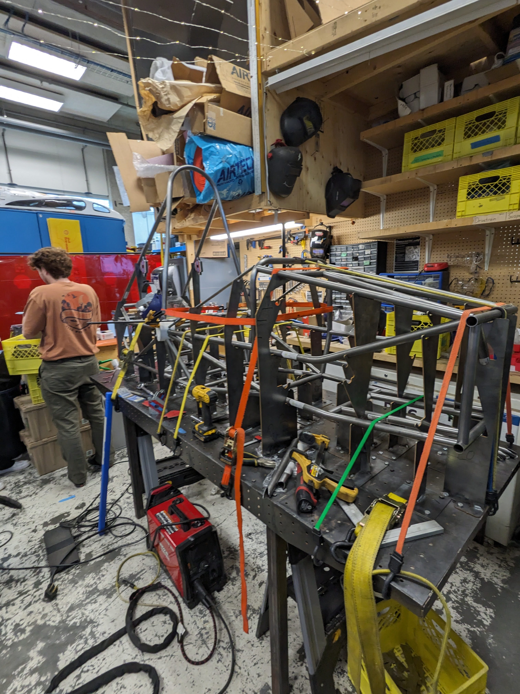
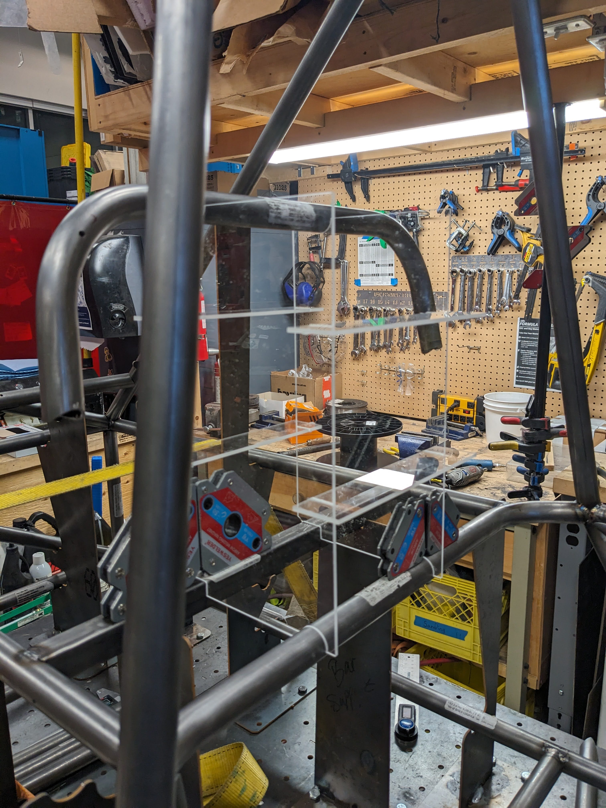
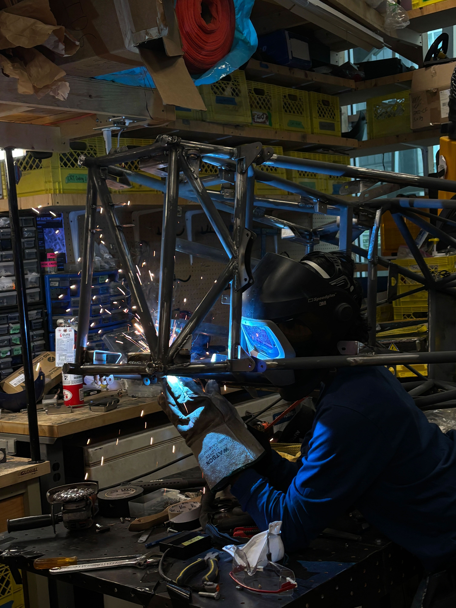

FSAE Chassis Design and Manufacture
Led the design and manufacture of the 2026 UBC Formula Electric chassis, including the 4130 chromoly space frame, structural analysis, manufacturing drawings, welding fixtures, and frame fabrication.

Project Summary
- Led development of the 2026 car's 4130 chromoly space frame from design requirements through drawings, jigging, and fabrication.
- Established documented requirements and validation methods so design decisions could be traced to calculations and trade-offs.
- Modelled the 4130 chromoly space frame in SolidWorks around suspension, harness, impact-attenuator, and cornering loads.
- Connected an ANSYS beam model to the braking, cornering, bump, and combined-load cases from the suspension analysis pipeline.
- Carried the design into manufacturing drawings, custom jigging, frame assembly, and MIG-welded tab installation.
- The FEA model predicts 1,855 N·m/° of chassis torsional stiffness.
- The design exceeds the 1,446 N·m/° threshold for less than 20% load-transfer-distribution loss, while identifying 3,168 N·m/° as the next 10%-loss target.
- The completed documentation links the frame's design, analysis, and fabrication decisions in one handoff-ready system.
Problem
UBC Formula Electric designs, builds, and races a formula-style electric car against other university teams every year. The chassis is the one system every other subteam integrates with: suspension, powertrain, aero, the driver. As Chassis Lead for the 2026 car, I own that structure from concept sketch through competition scrutineering, as well as managing my subteam members in their projects like circuit board enclosures and the firewall design.
Goals for This Year
The central goal is to move from a chassis with very little documented design justification to one built around clear requirements, traceable decisions, and repeatable validation tools.
- Set a concrete torsional-rigidity goal — explain why additional stiffness improves suspension tuning authority, then derive a numerical target from literature, mathematics, and vehicle physics rather than relying on a rule of thumb
- Expand structural validation — conduct additional FEA and supporting hand calculations for the frame, suspension mounts, harness anchors, and other critical structural components
- Research chassis geometry — investigate space-frame geometry, triangulation, load paths, node placement, and packaging tradeoffs before committing to the next design
- Establish a bolted-joint methodology — create a consistent process for preload, shear transfer, bearing, tear-out, slip, fastener strength, and joint-level factors of safety
Design
The frame is a 4130 chromoly tube-steel space frame, sized member by member from the loads it actually sees — suspension pickups, harness attachment points, impact attenuator mounting, and the torsional loads that come from cornering. I model the full assembly in SolidWorks and reason about load path before committing to a tube diameter or wall thickness.
Chassis Torsional Rigidity
A chassis that twists between the axles absorbs part of the differential torsional moment generated by the suspension. That pulls the lateral load transfer (LLT) distribution back toward 50:50, so anti-roll bar changes produce less handling-balance adjustment at the tyres than the suspension model predicts.
I applied the quasi-static three-body model developed by Deakin et al. to the 2026 car. The model treats the front and rear suspension roll stiffnesses as springs connected by the chassis torsional stiffness, and shows that transmission is governed by the ratio of total suspension roll stiffness to chassis stiffness. The analysis uses 596 N·m/° front and 513 N·m/° rear roll stiffness, 49:51 weight distribution with driver, and the FEA-predicted chassis stiffness of 1,855 N·m/°.

At the current 53.7:46.3 roll-stiffness split, the model delivers 53.13% front LLT versus 53.7% for a rigid chassis.

The current design exceeds the 1,446 N·m/° stiffness required to keep loss below 20%, but falls 1,313 N·m/° short of the 3,168 N·m/° required for 10% loss. In practical terms, about one seventh of the intended ARB adjustment at the maximum tuning split is absorbed as chassis twist rather than transmitted to the tyres.
This makes 1,855 N·m/° acceptable against the literature's minimum criterion, but not the future target. The next chassis should aim for at least 3,168 N·m/°, with the analysis repeated using physical torsion-test data once available; joint and installation compliance may reduce effective stiffness below the FEA prediction.
To find the stiffness of the current CAD design, I had one of my team members convert the SolidWorks space frame into an ANSYS line-body model, assigned each member its actual tube section, and connected the beam nodes at the welded joints. The suspension pickup nodes were loaded using the design cases generated by the Suspension Load Analysis Pipeline I created, keeping the structural model tied to the same braking, cornering, bump, and combined-load assumptions used across the car.
For the torsion case, one axle was constrained while the suspension loads formed a torque at the opposite axle. we measured the relative front-to-rear rotation of the pickup planes and divided the reacted torque by that angular deflection. That beam-model result produced the current 1,855 N·m/° value used in the LLT analysis above.
Manufacturing
The frame is TIG-welded from notched 4130 tube ordered from VR3, which I coordinated using the following drawings.



To turn those drawings into an accurate welded frame, we designed a custom welding jig around the fixture table. The locating plates, clamps, and tie-downs held the chassis nodes and tubes in position while we assembled and welded the structure, helping preserve the suspension hardpoints and overall frame geometry as heat was introduced.

During fabrication, I noticed that the existing headrest arrangement did not provide enough support to hold the part where it needed to be. I improvised a dedicated jig from leftover acrylic, using the frame itself as the locating reference so the headrest could be supported and aligned before its mounts were finalized.

I also completed much of the chassis welding work myself, including welding the majority of the mounting tabs onto the frame. The photo below shows me welding the tabs used to mount the tractive battery structure.

Results
I carried the 2026 space frame through requirements, geometry development, stiffness analysis, manufacturing drawings, custom jigging, and fabrication, with the major decisions tied to calculations or documented trade-offs. That traceability gives the team a defensible design at competition and a clear starting point for whoever develops the next chassis.
Three-View Drawings
The AutoCAD assembly set documents the finished vehicle envelope and packaging from the top, side, and front.